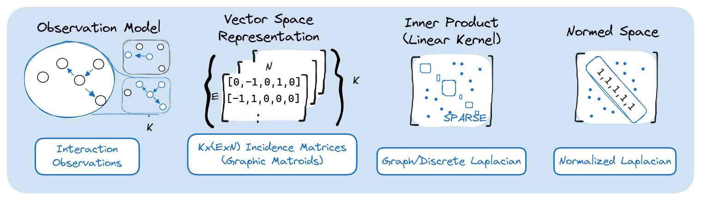
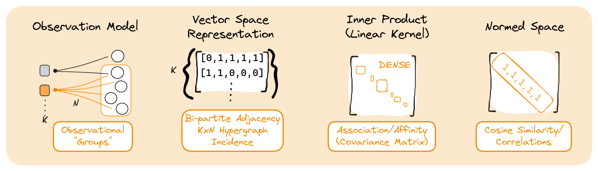

Incidence in Vector Space
From [1], and linalg book, and hypergraph incidence model
For each, describe the meaning of
- Observation model (and connection to node activation data)
- Vector space representation
- Inner product (linear kernel)
- Induced Norms
Dependence as Graph
Initial notation (set-based) and outline of section

Edges as Vectors of Nodes
Inner Product on Edges
Laplacian as inner product on incidence observations. Associated objects (degree vector, o)
Rescaling to achieve normaalization.
Use to define kernels (and application e.g. soft-cosine measure)
From Edge Observations to Node Activations
Strictly speaking, we can’t say that nodes are directly observed in this space… edges are. Collections of nodes are measured two-at-a-time (one-per-edge being traversed).
Another way to approach is to view inner products as a sum of outer products. A each edge uniquely corresponds to 2 nodes (in a simple graph). Use triangle unfolding for closed form bijection.
Unrolling 3D tensor of subgraphs along eads to a secondary representation of graphs as an edgelist, having binary activation vectors on edges rather than nodes. Then each observation in this model is necessarily a set of activated edges. The non-zero (visited) nodes are found using the incidence matrix as an operator.
Occurence as Hypergraph

Hyperedges as Vectors of Nodes
Inner product on Hyperedges
Roundabout way of describing binary/occurrence data. Inner product is co-occurrences.
Leads to correlation/covariance, etc.
Combining Occurence & Dependence
- soft cosine
- kernels on graphs (incl. coscia euclidean)
- Retrieving one from the other is hard.